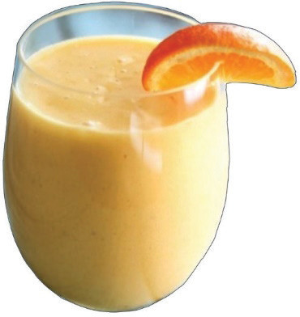
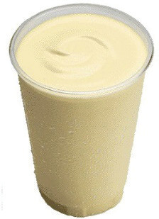

Banana milkshake
Ingredients (serve 1 person)
200 ml milk (dairy or plant-based)
2 ice cubes (Optional)
5 g sugar or honey (Optional)
2 medium ripe bananas
Method
1. Boil milk and cool.
2. Wash, peel and then press bananas through a sieve to get banana pulp.
3. Put the banana pulp, milk, sugar, and ice cubes into a shaker or bottle and shake vigorously. You can also blend all the ingredients together to get a smooth mixture.
4. Serve it accordingly.
Figure 5.11 shows a glass of banana milkshake.

107